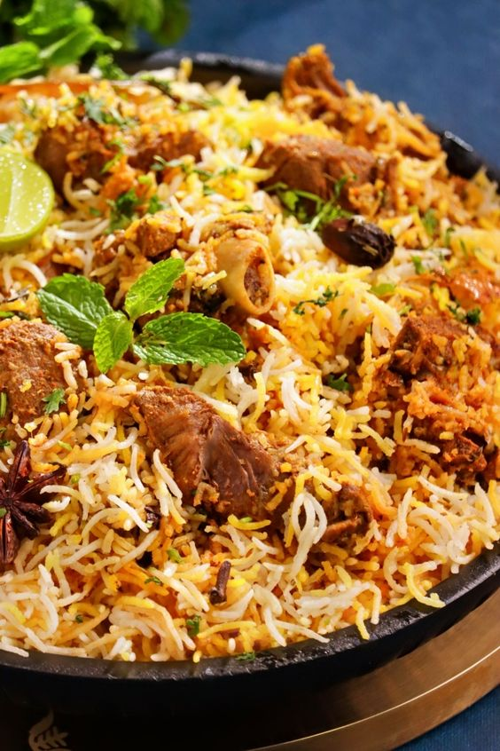
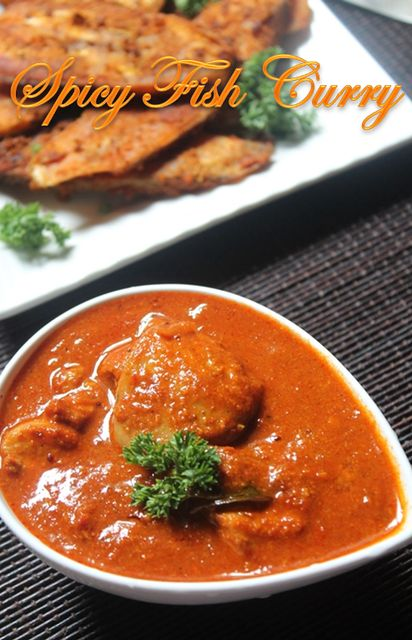
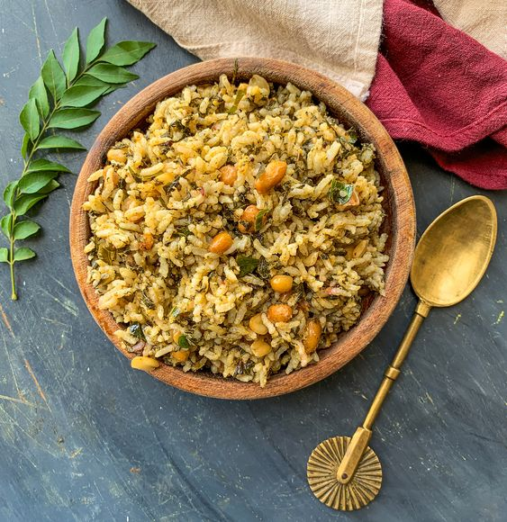

Famous Foods of Telangana
Hyderabadi Biryani

Hyderabadi Biryani Recipe:
- Ingredients:
- 500g basmati rice
- 500g chicken, cut into pieces
- 2 onions, thinly sliced
- 2 tomatoes, chopped
- 1 cup yogurt
- 2 tablespoons biryani masala
- 1/2 teaspoon turmeric powder
- 1 teaspoon chili powder
- 2 tablespoons ginger-garlic paste
- 1/4 cup mint leaves
- 1/4 cup coriander leaves
- 4 tablespoons oil
- Salt to taste
- Instructions:
- Soak the basmati rice in water for 30 minutes.
- Heat oil in a pan, add onions, and sauté until golden brown.
- Add ginger-garlic paste and cook until raw smell disappears.
- Add tomatoes, biryani masala, turmeric powder, chili powder, and salt. Cook until tomatoes are soft.
- Add chicken pieces and cook until they are browned and cooked through.
- Stir in yogurt, mint leaves, and coriander leaves. Cook for a few minutes.
- In a separate pot, cook the rice until it's 70% done. Drain the water.
- Layer the chicken mixture and rice in a heavy-bottomed pot. Cook on low heat for 15-20 minutes.
- Serve hot with raita or salan.
Saddhi

Saddhi Recipe:
- Ingredients:
- 1 cup toor dal (pigeon peas)
- 1/2 cup chopped vegetables (carrots, beans, potatoes)
- 1 onion, chopped
- 1 tomato, chopped
- 1 tablespoon ginger-garlic paste
- 1 teaspoon cumin seeds
- 1/2 teaspoon turmeric powder
- 1 teaspoon mustard seeds
- 1 tablespoon oil
- Salt to taste
- Chopped coriander for garnish
- Instructions:
- Cook toor dal in a pressure cooker until soft.
- Heat oil in a pan, add cumin seeds and mustard seeds. Let them splutter.
- Add onions, ginger-garlic paste, and tomatoes. Sauté until onions are translucent.
- Add chopped vegetables, turmeric powder, and salt. Cook until vegetables are tender.
- Add the cooked dal and mix well. Simmer for a few minutes.
- Garnish with chopped coriander and serve with rice or roti.
Gongura Pachadi

Gongura Pachadi Recipe:
- Ingredients:
- 1 bunch gongura (sorrel leaves)
- 1 onion, chopped
- 2 green chilies
- 1 tablespoon ginger-garlic paste
- 1 tablespoon oil
- 1 teaspoon mustard seeds
- 1/2 teaspoon fenugreek seeds
- Salt to taste
- Instructions:
- Wash and chop the gongura leaves.
- Heat oil in a pan, add mustard seeds and fenugreek seeds. Let them splutter.
- Add onions and green chilies. Sauté until onions are golden brown.
- Add ginger-garlic paste and cook until raw smell disappears.
- Add the chopped gongura leaves and salt. Cook until the leaves are wilted and well-cooked.
- Let it cool, then blend into a coarse paste.
- Serve with rice or as a side dish with any meal.